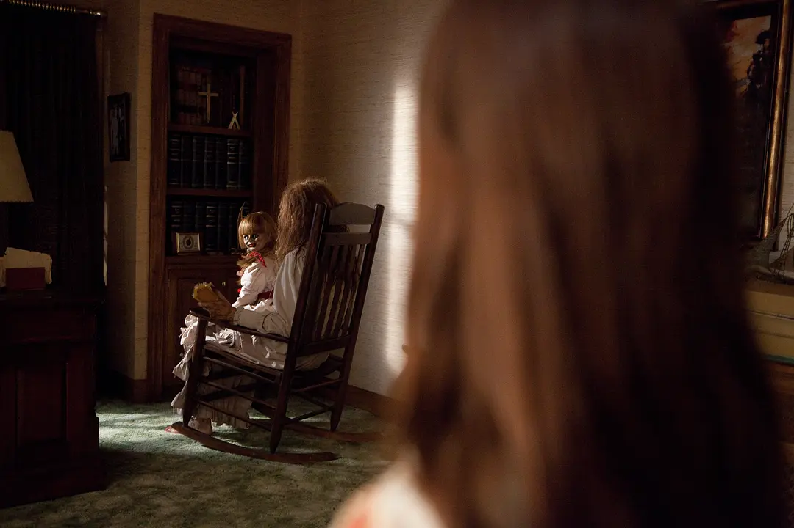
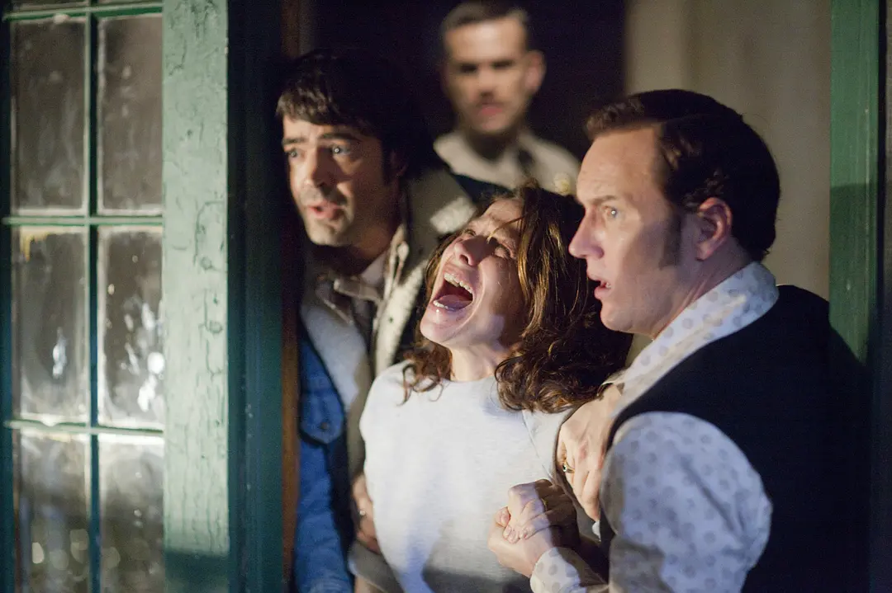
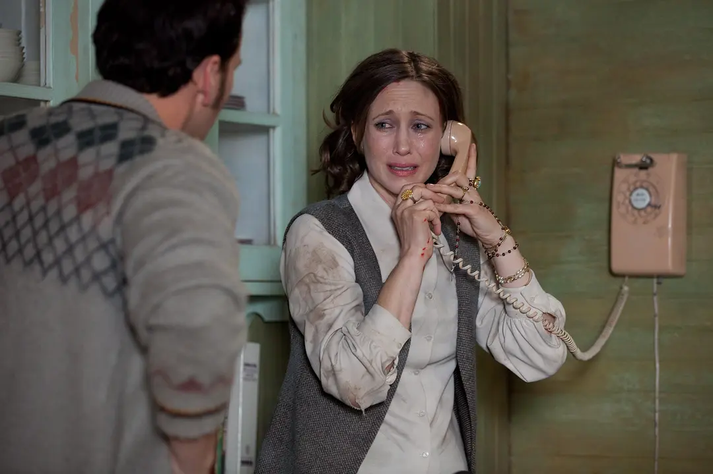
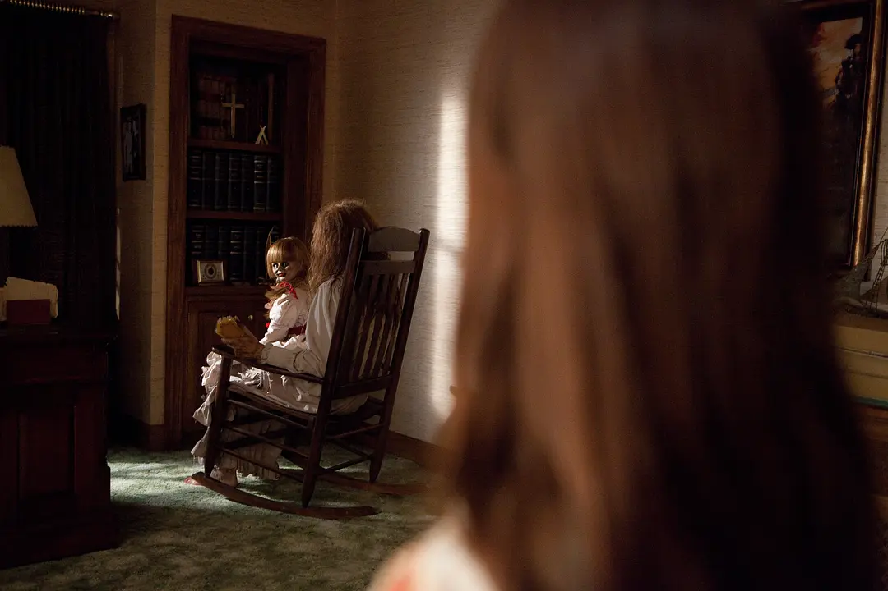
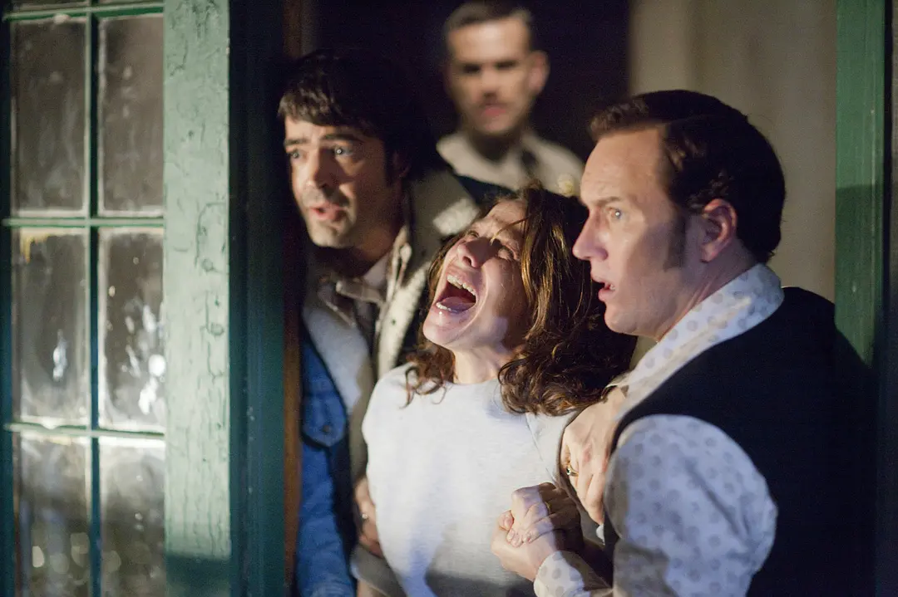
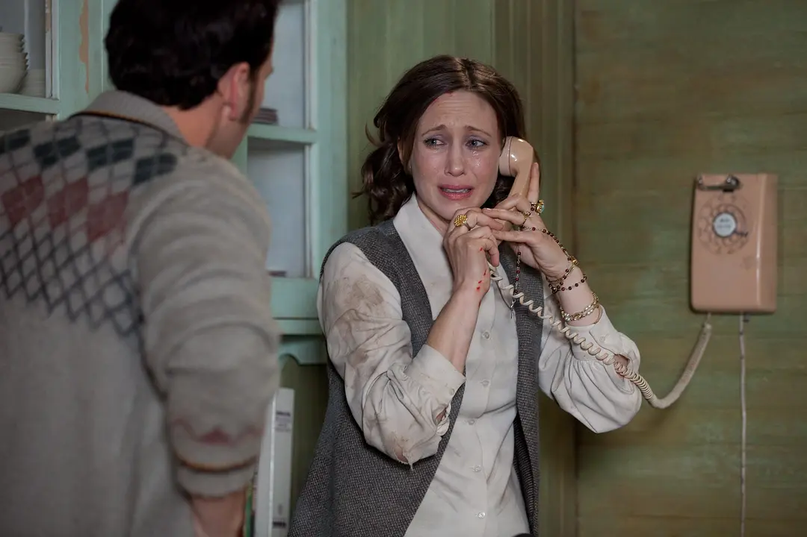

Rate
8.0/10
Synopsis
In the 1970s, Roger and Caroline brought their five lovely and beautiful daughters to their home in Rhode Island. Lives in an old house in Riswell. Although the house is old and vicissitudes of life and has a long history, it allows the Peron family to experience the joy and joy of returning to the countryside. Unexpectedly, the good times did not last long, and a series of strange incidents appeared one after another, which made the girls scream in shock, and also made the Perrons' nerves extremely tense. To this end, they went to find the most famous Warren couple at the time. Husband Ed is the only exorcist recognized by the Catholic Church, and his wife Lorraine has the ability to see spirits. They have no trouble identifying the crux of the sinister house, and in order to obtain permission from the church to exterminate the spirits, they must go deep and collect evidence of the existence of evil spirits.
Stills

 





Role table
| Role | Cast |
|---|---|
| Ed Warren | Ryan Kwanten |
| Lorraine Warren | Vera Farmiga |
| Ron Livingston | Donnie Wahlberg |
| Lili Taylor | Carolyn Perron |
Reviews
- These few scenes are very scary: palms behind the shoulders, the wardrobe for the first time, the sheets are blown up by the wind, and Nancy's hair stands up... Although it is a familiar scary story as a whole, and the ending is a little discouraged, but the above scenes Fresh and eye-catching, it is unforgettable. The plot of turning on the lights in a dark place has also made great progress
- After watching the movie, I found that I had bruises on my body and my stomach tightened for a while. . .
- If you watch it in the movie theater, you should be scared to spray your nose! I really like the part where the ghost tore the girl's long hair and spun around the room! A person in the room couldn't help screaming loudly! what!